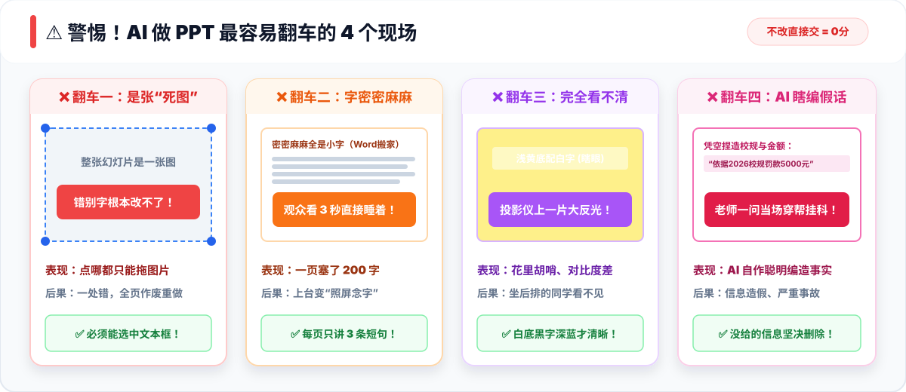
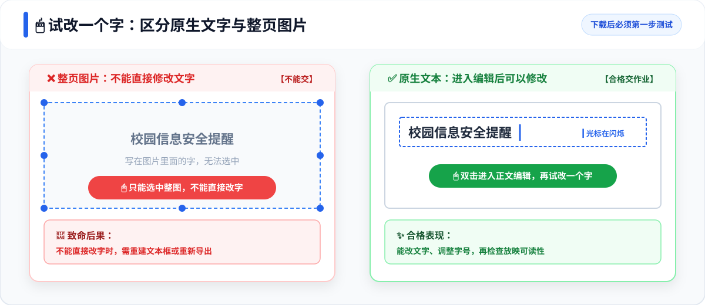
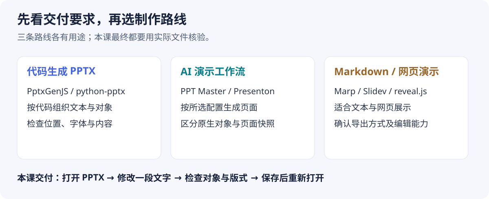
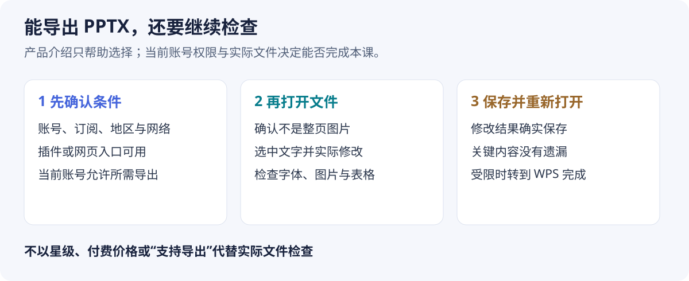
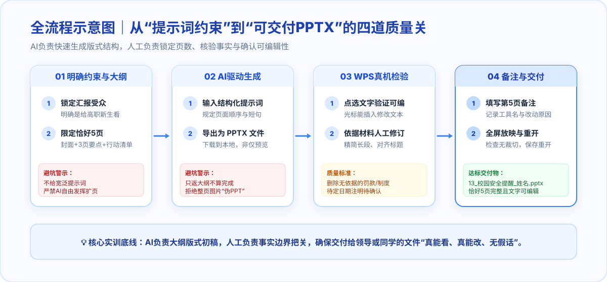
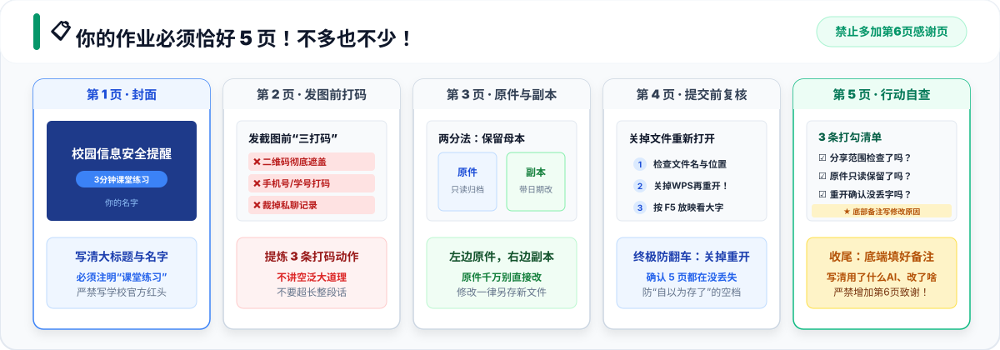
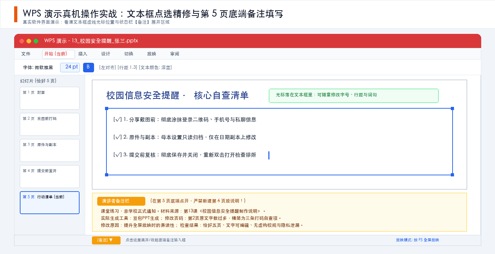

第三章｜AI 办公与数据处理 · 第 13 次课 · 2 学时
办公实战：PPT自动生成
用清楚的大纲约束生成，再把实际PPT改到能看、能讲、能继续编辑。
00 知识回顾
- 上节课我们掌握了利用 AI 辅助进行 Excel 数据汇总分析与图表生成，学会了从复杂明细中提炼关键结论。
- 本节课我们将进入日常办公汇报的另一核心场景：如何将梳理好的内容与结论，高效且合规地自动转化为排版清晰、随时可编辑的演示文稿（PPT）。
01 任务预告
本课学习目标
- 掌握给 AI 设定受众、时长与页数约束的提示词技巧，理解先定内容结构、再生成或排入可编辑文本框的做法。
- 识别“伪可编辑”PPT（整页图片）与“真可编辑”PPT的区别，学会向 AI 索要逻辑图解替代文字注水，掌握文字与版式的快速精修。
- 遵循真实性原则，严格根据素材核验信息，杜绝 AI 虚构条款或日期。
核心交付物与作业规范
- 最终作品：恰好五页的《校园信息安全提醒》演示文稿。
- 交付格式：
13_校园安全提醒_姓名.pptx - 提交标准：
- 恰好五页（含封面与行动清单），每页一个明确重点。
- 在 WPS 中文字可点选编辑，非整页贴图。
- 在第 5 页演讲者备注中完整填写修改记录与工具来源。
翻车预警：为什么不能把 AI 吐出来的 PPT 直接当终稿？
生成PPT后，要检查文字能否编辑、信息是否来自材料，以及放映时是否清楚。以下四类问题是检查重点，不预设每份初稿都会出现：

针对四大翻车的【避坑提示词公式】与【正确操作方案】
| 典型翻车现象 | 为什么会这样？ | 针对性合理提示词（直接套用） | 正确动手操作动作 |
|---|---|---|---|
| ❌ 翻车一：是张死图 | 工具直接把网页画面转成位图贴图 | “输出格式必须为原生 PPTX 文件，所有文字必须使用独立矢量文本框，严禁将整页合并为一张静态图片。” |
下载后在WPS中双击正文进入文字编辑，尝试改一个字；仅选中对象边框不能判断文字是否可编辑。 |
| ❌ 翻车二：字密密麻麻 | 未限制篇幅，AI 默认长篇大论 | “每页只讲 1 个核心要点，正文严格提炼为最多 3 条短句，每条不超过 15 个字，严禁整段大篇幅叙事。” |
动手删掉修饰词，改用动词短语（如把“请注意不要发二维码”改成“发前彻底打码”）。 |
| ❌ 翻车三：完全看不清 | AI 随机套用了花哨刺眼的模板 | “采用纯白背景、深灰正文与商务深蓝标题的高对比配色，字号不低于 18pt，严禁使用浅色字或花哨底纹。” |
按键盘 F5 进入全屏，站起来后退两步看大屏，确认字迹清晰不反光。 |
| ❌ 翻车四：AI 瞎编假话 | 大模型概率预测，无中生有编造事实 | “严格仅依据我提供的材料生成，未提及的法规条款、罚款金额或统计数字一律不得捏造补充。” |
逐字对照老师给的实验材料，只要材料里没有的数据，一律手工删掉。 |
02 基础概念
概念 1｜受众与信息目标
核心定义： 受众是听你讲的人，信息目标是希望他们听完知道什么、做什么。它们直接决定词语难度、案例深度以及哪些信息必须精简。给 AI 仅输入宽泛的主题（如“帮我做个安全汇报”），通常无法得出符合特定听众的 PPT。
- 场景示例： 给大学新生宣讲文件安全，应用“别把草稿当终稿”的生活场景切入；无需堆砌大量信息安全行业专业术语。
- 关键原则： 先明确“说给谁听、听完做什么”，再让 AI 生成大纲或选模板。
概念 2｜大纲与每页重点（严格控制在五页）
核心定义： 好的 PPT 每一页只传达一个核心信息点。五页包含封面与结尾，而不是五页正文外再额外增加开场和致谢。
- 结构安排： 封面页 → 分享截图前 → 原件与副本分离 → 提交前复核 → 核心行动清单。
- 关键原则： 先锁定页数和大纲结构，再驱动生成。若 AI 生成了多余的致谢页或无关过渡页，必须果断合并或删去。
概念 3｜版式层级与放映可读性
核心定义： 放映时坐在后排的同学能看清大标题，能在 3 秒内看懂该干什么。优先删掉多余废话，字号放大到 18pt 以上。
- 常见误区： 一页塞进 150 字的大段文字，观众在 5 秒内根本无法捕获重点。必须拆分为简短动词短语。
- 关键原则： 必须在全屏放映（F5）状态下检查文字对比度与排版，切忌只在缩小窗口中粗略浏览。
概念 4｜真可编辑成稿与样式映射
核心定义： 下载后双击正文，尝试选中并修改一个字。原生文本框被选中时也可能出现控制点，不能仅凭边框判断；如果只能选中整页图片、不能编辑其中的字，就不符合本课的文字可编辑要求。

- 理解一种生成方式： AI可以先提炼结构化大纲，再由支持PPTX的工具把标题、正文等写入幻灯片。Markdown是可选的内容组织方式，不是所有PPT生成工具都采用的唯一原理。
- 理解样式映射机制： 采用原生文本框生成或导入时，标题和短句可以对应到幻灯片对象：
- 一级标题（
#） ➔ 自动映射为单页幻灯片的主标题矢量文本框； - 列表短句（
-） ➔ 自动映射为幻灯片版式中的正文占位符与独立文本框。
- 一级标题（
- 检查实际导出： 大纲清晰有助于控制内容，但不能保证导出的每个对象都可编辑。导出PPTX后仍需在WPS中修改正文、查看图形并进入放映；不支持直接生成文件时，可以按五页大纲在WPS中新建页面并填入文字。
- 关键原则： 下载后必须首先在 WPS 中点选测试，并核对文字是否来源于材料，绝不保留 AI 凭空捏造的内容。
如果 AI 工具在生成幻灯片时，自动补充了一张排版极为精美的“校园网络诈骗典型案例及涉案金额”统计饼图，看起来非常高级专业，但老师给的课堂材料里并没有提供这些数据。为了让 PPT 显得更充实、有说服力，能否直接保留？应该如何处置？
点击查看参考答案与实操避坑解析
坚决不能保留，必须立即剔除。
- 核心红线：信息真实与可溯源高于视觉美观。 AIGC 在生成演示文稿时极擅长凭借模型概率“无中生有”编造符合语境的假数据和虚构案例（即 AI 幻觉）。如果直接将未经核实的假数据交付汇报，属于严重的信息失真失误。
- 规范动作： ① 立即删除虚构图表；② 替换为课堂材料中明确给出的“真实自查清单”或具体行动指引；③ 页面宁可留白保持清爽，也绝不为了“排版好看”而编造事实。
03 核心案例
案例剖析：在 WorkBuddy 中技术选型——制作 PPT 的成熟方案与优劣取舍
在日常办公与课堂汇报中，很多同学面对“AI 自动做 PPT”的需求，往往第一反应就是在网上盲目乱搜“免费一键做 PPT 网站”。结果要么遭遇“强制充值 VIP / 扫码扣点”的套路，要么下载下来才发现整页是一张完全无法编辑的位图死图。
在成熟的职场人机协同中，面对不熟悉的任务，首要动作是借助任务型智能体（WorkBuddy）进行技术调研与方案选型，看清底层技术的本质与各方案的致命缺点，做出最契合交付标准的技术决策。
第一步：在 WorkBuddy 中发起自然语言调研指令
打开 WorkBuddy（日常办公模块），直接向智能体输入全网调研提示词：
查阅 github 与 AI网站，目前制作ppt有哪些成熟的方案？各自有什么优劣
第二步：解构 GitHub / 开源底层方案（看清技术本质）
下图归纳三条制作路线，下表列出7种工具，供课堂比较内容组织与交付格式。是否符合本课要求，要检查实际导出的PPTX：

| 方案名称 | 技术本质 | PPTX 中需核验什么 | AI 接入方式 | 可用于什么 | 主要检查事项 |
|---|---|---|---|---|---|
| PptxGenJS | JS 生成 PPTX | 文本、表格、形状等对象 | 另接模型或智能体 | 按代码控制页面对象 | 生成后逐页检查位置、字体与溢出 |
| python-pptx | Python 操作 PPTX | 文本与形状能否继续修改 | 另接模型或智能体 | 按材料生成或修改页面 | 内容处理和视觉布局都需检查 |
| PPT Master | 智能体与 PPTX 工作流 | 区分原生对象版与快照版 | 由所用智能体提供 | 按工作流组织材料与页面 | 同名项目较多，先确认仓库、版本和导出方式 |
| Presenton | AI 演示生成平台 | 导出 PPTX 后实际编辑文字 | 按配置连接模型 | 通过界面或 API 生成演示 | 部署、模型连接与实际导出效果均需验证 |
| Marp | Markdown 生成演示 | 区分常规导出与实验性可编辑导出 | 可用 AI 辅助写 Markdown | 用文本组织课件 | 不凭扩展名判断可编辑性，确认导出选项与依赖 |
| Slidev | Vue 与 Markdown 网页演示 | 确认导出的是图片还是可编辑对象 | 可用 AI 辅助写源码 | 制作网页交互与代码演示 | 常规 PPTX 导出为逐页图片，其他导出方式需按版本检查 |
| reveal.js | HTML 网页演示框架 | 网页或 PDF 不能直接等同可编辑 PPTX | 可用 AI 辅助写 HTML | 用浏览器展示演示页面 | 本课要交 PPTX，另行转换后仍需实际编辑核验 |
📌 深度教学启发： 网页演示与PPTX适用于不同交付场景。本课明确要求在WPS中编辑和批注PPTX，因此要按实际导出文件核验；网页也可以按条件离线展示，但不能直接当作本课的可编辑PPTX交付。
第三步：解构成熟商业 AI 网站（看清功能与局限）
下表列举7款产品作为方案比较线索；功能、导出权限、免费额度及账号限制可能变化，使用前以当前官方说明和本人账号的实际页面为准，不把这张表当作永久免费或导出效果保证：

| 产品名称 | 使用入口 | PPTX 路径 | 可比较的应用场景 | 使用前与导出后检查 |
|---|---|---|---|---|
| Gamma | 网页生成与排版 | 导出 PowerPoint | 根据大纲制作初稿 | 核对账号额度、导出范围，以及文字和表格能否修改 |
| Plus AI | PowerPoint / Google Slides 插件或网页 | 插件编辑或网页导出 PPTX | 在现有演示工具中制作 | 核对插件安装条件；网页导出后的修改不会同步回原网页版本 |
| PowerPoint Copilot | PowerPoint 内使用 | 在 PowerPoint 中制作 | 已有相应授权的用户 | 确认账号、订阅和组织设置，再核对生成内容 |
| Beautiful.ai | 网页自动布局 | 区分 Editable PowerPoint 与图片版 | 按版式组织内容 | 可编辑导出受订阅限制；检查字体及动画、媒体等差异 |
| Canva | 网页演示设计 | 演示文稿可选 PPTX | 结合模板组织图文 | 确认设计类型是演示文稿；导出后检查文字、图片和版式 |
| SlidesAI | 生成演示并导出 | 选择 PowerPoint 文件 | 将资料组织为演示初稿 | 核对当前账号权限，检查压缩后的文字是否保留原意 |
| Pitch | 云端演示与协作 | 导出 PowerPoint | 团队共同修改演示 | 核对套餐的导出权限，打开导出文件检查字体和对象 |
第四步：从调研得出的人机协同实训决策法则
本次实训采用**“材料定内容→生成或排入五页PPTX→实际编辑核验”**的路线，不以工具承诺代替文件检查：
- 先确认工具条件：使用已有可用工具，确认是否能生成PPTX；遇到登录、额度或导出限制时，保留大纲并转到WPS完成；
- 先定内容，再检查版式：让AI依据材料提炼五页内容，用WPS核对页数、文字编辑、图形与放映效果；
- 落实五步标准化工作法：
- ① 对话降噪：输入原始材料，向 AI 明确受众与核心目标；
- ② 锁定大纲：要求 AI 仅输出规范的 5 页 Markdown 层次大纲（杜绝虚构条款）；
- ③ 形成PPTX：能直接生成时下载文件；只能得到大纲时，在WPS中新建五页，将对应标题与短句填入文本框；
- ④ 视觉精修：套用商务母版，用卡片流程图替换长段文字；
- ⑤ 审计留痕：在第 5 页底端备注栏如实记录技术路线与修改原因。
💡 从案例调研到实践任务的认知过渡： 选工具时先看是否满足本课交付要求：恰好五页、文字可编辑、内容有依据。工具不同，仍按相同标准打开文件核对。 接下来进入【04 实践任务】，我们将使用上述内容与文件检查方法，手把手制作一份严格受控的 5 页《校园信息安全提醒》PPTX！
04 实践任务｜以高职新生为受众，制作一份五页的可编辑《校园信息安全提醒》PPTX
工具与材料准备
- 可用工具：WorkBuddy（对话调研与大纲生成）或经教师指定的能够输出结构化大纲/PPTX 的 AI 工具 + WPS 演示。
- 实训材料获取：本课练习材料已统一上传至【超星学习通 ➔ 资料 ➔ 全部文件 ➔ 人工1、2班，课程课件 ➔
第13次课_校园信息安全提醒制作说明.txt】（或原名lesson13-practice-brief.txt），请在学习通资料区下载；亦可直接在下方一键复制说明文本。

步骤①｜阅读材料，锁定五页大纲
阅读以下《校园信息安全提醒制作说明》（可点击右上角【复制代码】一键获取完整材料），核对五页对应要点，严格按照 5 页卡片作业标准完成：
第13课课堂设计材料：校园信息安全提醒
用途：供高职新生班会展示的五页PPT练习，不是学校正式通知或安全事件统计。
展示时间：三分钟。
材料1：分享截图前，先检查是否带有登录二维码、账号、个人联系方式或无关聊天内容。课堂展示使用模拟信息，不分享真实敏感信息。
材料2：整理文件时，保留原件，另建工作副本。正式提交前核对文件名和提交位置，避免把草稿发成终稿。
材料3：保存PPT后重新打开，逐页检查文字、图片和页数，再进入放映查看显示效果。
五页约定：
1. 封面：校园信息安全提醒，注明课堂练习。
2. 分享截图前：检查截图范围与信息。
3. 原件与副本：说明保留原件的用处。
4. 提交前：核对文件名、位置与重新打开结果。
5. 行动清单：用三个问题提醒自己检查。
不添加：虚构安全事件、损失金额、学校处罚规定、二维码、真实联系方式、伪造的权威来源。
修订记录：在第5页演讲者备注里写清一处人工修改、原因及材料来源，不增加第6页。

- 第 1 页 封面：校园信息安全提醒（写大标题与姓名，注明课堂练习）。
- 第 2 页 分享截图前：截图三打码（遮盖登录二维码、手机号学号、无关私聊）。
- 第 3 页 原件与副本：两分法（原件只读归档，修改只动副本）。
- 第 4 页 提交前：关掉重开（重新双击打开文件，防白板与丢字）。
- 第 5 页 行动清单：重构为清晰的“自查节点状态流”（分享前排查 ➔ 原件隔离 ➔ 终稿重开验证），底端备注栏写清工具与修改理由。
步骤②｜在 AI 工具中驱动生成并导出 PPTX
在AI工具中输入以下提示词，能生成PPTX时下载并保存到本地。若工具只返回大纲或不支持导出，在WPS中新建五页，按对应内容填入标题与正文文本框，再另存为PPTX；不要把聊天回复当成已经保存的文件：
请为高职新生生成可下载、文字可编辑的5页PPTX，主题“校园信息安全提醒”，用于三分钟课堂练习。
恰好5页，顺序是：
1 封面：校园信息安全提醒，注明课堂练习。
2 分享截图前：检查登录二维码、账号、联系方式与无关聊天，课堂只用模拟信息。
3 原件与副本：保留原件，另建工作副本再修改。
4 提交前：核对文件名与位置，保存后重新打开检查文字、图片和页数。
5 行动清单：以清晰的三步自查节点状态流呈现（分享前排查、原件隔离、重开验证）。
每页只讲一个重点，正文最多3条短句或卡片节点。采用清楚的中文字体和高对比配色。
不增加真实事件、损失数据、处罚规定、二维码、联系方式或虚构来源。不要额外感谢页。不要把整页变成一张图片。
保留提示词中的材料与限制。 少写页数、事实范围或编辑要求，结果可能偏离任务；即使限制完整，仍须检查实际文件是否恰好五页、文字可编辑且没有新增事实。
步骤③｜在 WPS 中逐页检查，精修短句与结构图
用 WPS 演示打开刚刚下载的 .pptx 文件，执行关键人工精修：

- 基础核验：检查左侧缩略图是否恰好为 5 页；双击正文进入编辑，试改一个字，再撤销或改回，确认能正常增删修改文字。
- 消灭文字注水（精修利器：结构图替代长段文字）：
- 很多初稿的一大通病是“密密麻麻的文字搬家”。在真机精修时，最有效的高阶技巧不是盲目缩减字号，而是向 AI 索要逻辑流程结构，用图表替代长篇大论。
- 向 AI 索要结构图的实用提示词：
“请把这段文字的操作步骤，提炼为 3 个递进节点，并输出一段简洁的 Mermaid 流程图代码或横向卡片对齐文本。”
- 将 AI 输出的逻辑节点（如：
排查打码 ➔ 副本隔离 ➔ 重开验证）在 WPS 中排布为三联横向卡片或流程箭头图，瞬间让页面呼吸感增强、重点鲜明。
- 提升第 5 页信息密度（重构“自查节点状态图”）：
- 第 5 页“核心行动清单”不再只是 3 行文字的简单列表，而是重塑为一个清晰的自查节点闭环：
【节点 1 · 分享前】二维码彻底遮盖 ➔ 裁掉隐私私聊【节点 2 · 编辑中】只读保留原始文件 ➔ 仅在副本修改【节点 3 · 提交前】关闭后重新打开 ➔ F5 全屏放映复核
- 用三块并列或流程卡片承载，让行动清单一目了然，从枯燥的“文字注水”跃升为工业实战级的“可视化行动看板”。
- 第 5 页“核心行动清单”不再只是 3 行文字的简单列表，而是重塑为一个清晰的自查节点闭环：
步骤④｜在第 5 页底端展开备注栏，填写入档
点击 WPS 底部状态栏的“备注”按钮，展开第 5 页底端的演讲者备注栏（严禁新建第 6 页放说明！）：
课堂练习，非学校正式通知。
材料来源：第13课《校园信息安全提醒制作说明》。
实际生成工具：[填写 WorkBuddy 或其他工具名]
我修改的页码与原内容：[如：第2页原文字数过多]
修改后的内容：[如：精简为两条打码检查项]
修改原因：[如：提升全屏放映时的易读性]
检查结果：恰好五页、文字可编辑、无虚构校规与隐私泄漏。
步骤⑤｜按 F5 全屏放映复核与关掉重开
- 按键盘
F5进入全屏放映模式，站起来后退两步看大屏，确认字号够大、对比清晰。 - 另存为
13_校园安全提醒_姓名.pptx。 - 终极防丢招式：关闭 WPS，从文件夹中重新双击打开，确认 5 页内容与第 5 页底端备注全部完好保存，方可提交作业。
05 本课总结
成果自查卡
| 检查维度 | 达标合格要求 | 自检确认 |
|---|---|---|
| 页面数量 | 恰好 5 页（含封面与清单），无多余感谢页 | □ 通过 |
| 编辑能力 | 文字可在 WPS 中自由选中、增删、排版 | □ 通过 |
| 事实依据 | 仅依据课堂材料，无虚构的处罚制度与联系方式 | □ 通过 |
| 备注规范 | 修改原因与工具名称已在第 5 页备注完整体现 | □ 通过 |
| 交付命名 | 文件格式为 .pptx，命名为 13_校园安全提醒_姓名.pptx |
□ 通过 |
下节预告：下一节《第14次课｜文件管理与会议记录》，我们将进一步学习如何在 AI 协作中保护数字资产，高效整理工作日志与多轮会议纪要。